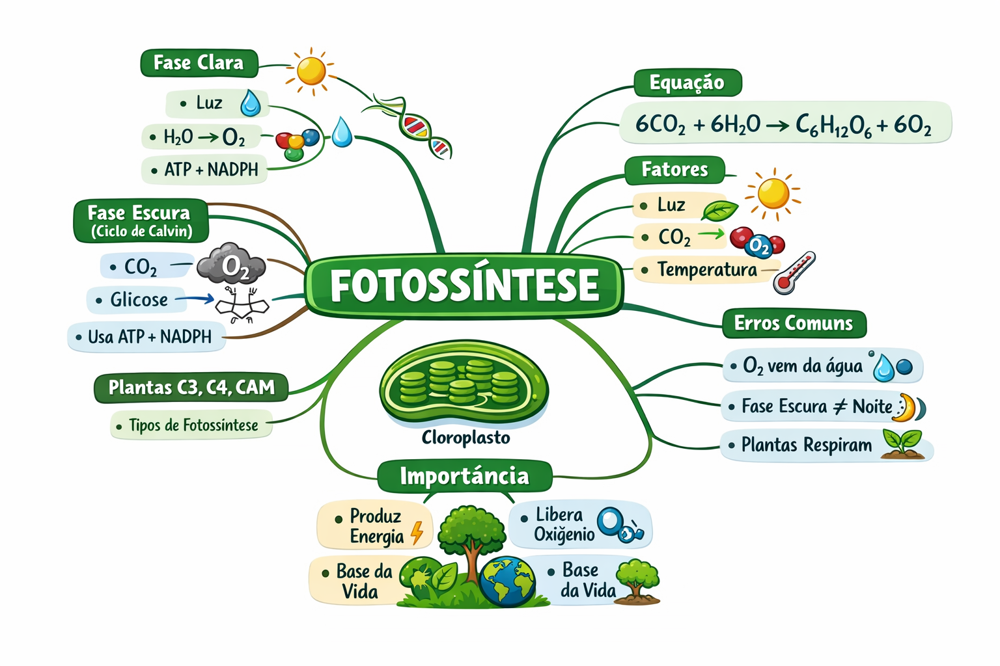

O fundamento energético dos ecossistemas
Fotossíntese é o processo pelo qual plantas, algas e algumas bactérias transformam luz em energia química, produzindo seu próprio alimento.
Em termos simples:
Fotossíntese é um conjunto de reações químicas anabólicas nas quais organismos autotróficos convertem energia luminosa em energia química armazenada em moléculas orgânicas, principalmente glicose, a partir de dióxido de carbono e água.
👉 Importante: O oxigênio liberado vem da água, não do CO₂.
Local onde ocorre a fotossíntese
onde ocorre a fase clara
onde ocorre a fase escura
Onde ocorre: tilacoides
O que acontece:
Onde ocorre: estroma
O que acontece:
A fotossíntese não é "uma reação", mas um sistema integrado:
Mais luz → maior taxa (até um limite)
Mais CO₂ → mais produção (até saturação)
Afeta enzimas do ciclo de Calvin
Essencial para a fotólise
👉 Aqui vemos adaptação → não existe "uma única fotossíntese"
Quantas moléculas de O₂ são produzidas ao formar 1 molécula de glicose?
Se não houver luz, a planta produz glicose?
1. Qual a função da luz na fotossíntese?
2. Onde ocorre a fase clara?
3. Qual molécula armazena energia produzida?
4. Explique a relação entre ATP e glicose
5. O que acontece se faltar água?
6. Por que o CO₂ é essencial?
7. Explique como o aumento de temperatura pode aumentar e depois diminuir a fotossíntese
8. Compare plantas C3 e C4 em eficiência
9. Relacione fotossíntese com cadeia alimentar
1. Explique por que a fotossíntese pode ser limitada mesmo com luz abundante
2. Modele a fotossíntese como um sistema energético (entrada → transformação → saída)
3. Compare fotossíntese e respiração celular em termos de fluxo de energia
Processo inverso
Produtores primários
Fixação de CO₂
Conversão energética
Base dos ecossistemas
Fotossíntese é um sistema de conversão de energia:
👉 Não é apenas um processo biológico
👉 É o fundamento energético dos ecossistemas
Explique com suas palavras:
👉 Por que o oxigênio liberado na fotossíntese vem da água e não do CO₂?
Se você não conseguir explicar claramente, volte e revise.
(Flip Card)
Durante a fotólise da água na fase clara, as moléculas de H₂O são quebradas.
Os átomos de oxigênio da água se combinam para formar O₂, que é liberado como subproduto.
O oxigênio do CO₂ vai para a glicose, não para o ar!
Diagrama completo da fotossíntese para estudo

Clique no botão acima para fazer o download da imagem em alta resolução.